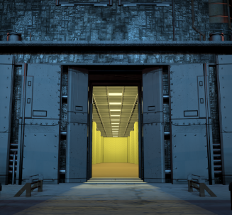

Welcome to the digital frontier of the A-Sync Foundation. For decades, our researchers have navigated the non-Euclidean complexities of the Complex to provide humanity with the space it so desperately lacks. Now, we are proud to offer you Infinite Storage Solutions—a seamless bridge between our world and the boundless expanse of the Backrooms. By utilizing our proprietary threshold technology, we provide an expansive, stable environment for your physical or data-based assets that transcends the limitations of traditional three-dimensional geometry.

Absolute Scalability:
Our "Project KV31" derived infrastructure ensures that as your needs grow, the space expands with you. There is no ceiling; there is only the horizon.
Unrivaled Security:
Your assets are housed within monitored, reinforced sectors of the Complex, protected by 24/7 surveillance and specialized containment protocols.
Hazard Mitigation:
We’ve done the hard work of clearing the anomalies. You get the utility of the infinite without the "spatial instability" of the unknown.
Securing your piece of the Infinite is as simple as a few clicks on our secure website. Simply select your required Volumetric Tier, complete the digital intake form, and our automated logistics team will provide you with a unique access key. For enterprise-level clients, we offer direct threshold-linkage for rapid asset transfer. Step into the future of storage today—because at ASync, we don't just find space; we create it.